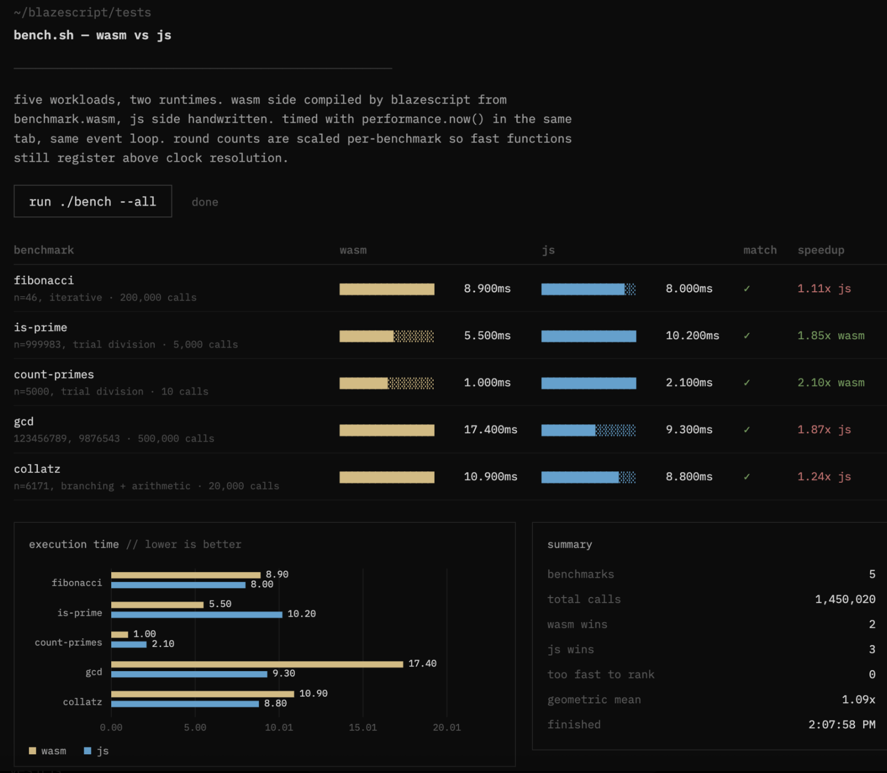
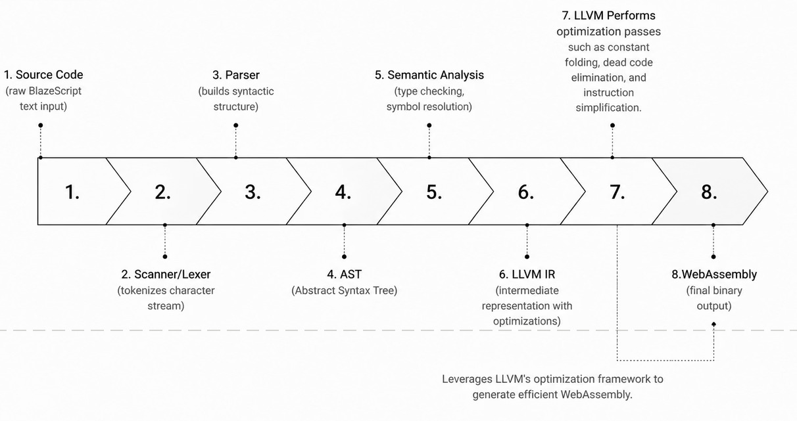

This project is a custom programming language whose compiler is made from scratch that uses ahead of time compilation which offers real advantages over JavaScript for certain workloads on the web. The end goal being is to genrate a web assembly object file that is faster than javascript on certail workloads
Benchmark

The above benchmark shows that the web assembly is 1.09x times faster than legacy javascript.
Compilation Pipeline

the compilation pipeline